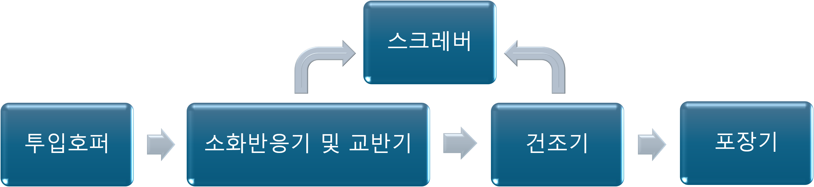
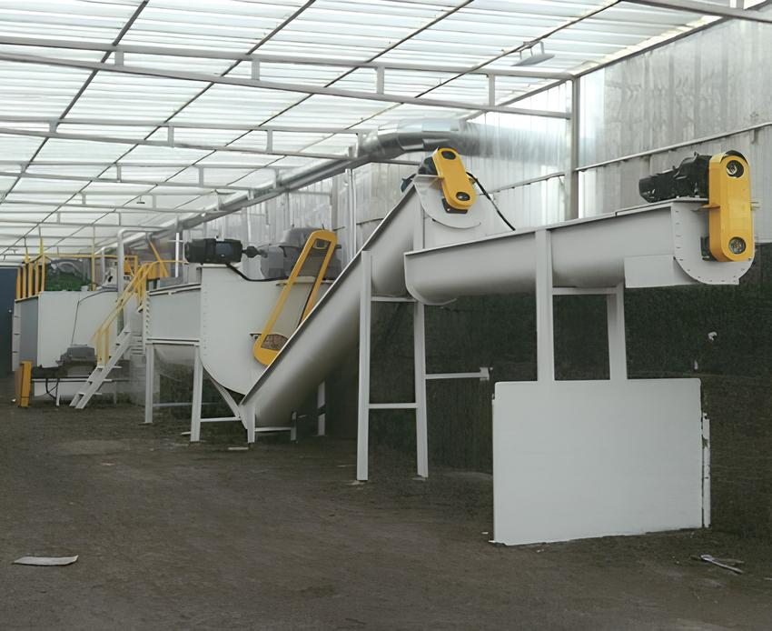

생석회의 화학반응을 이용한 자원순환형 비료 생산 공정.
생석회가 수분과 반응할 때 발생하는 고온·고알칼리 조건을 이용해 유기성 부산물을 위생적으로 처리하고, 이산화탄소와 결합시켜 안정적인 탄산칼슘비료로 전환합니다.

유기성 부산물과 석회 원료를 정량 투입합니다.
생석회 소화반응으로 고온·고알칼리 조건을 형성하고 균일하게 교반합니다.
수분을 조절하여 취급·저장이 용이한 상태로 건조합니다.
규격에 맞춰 계량·포장하여 완제품으로 출하합니다.

현장 여건에 맞춘 처리 설비를 운영하며, 원료 처리부터 최종 제품까지 전 과정에서 품질·환경 관리를 실시합니다.
※ 공장 설비 상세 소개는 준비 중입니다.